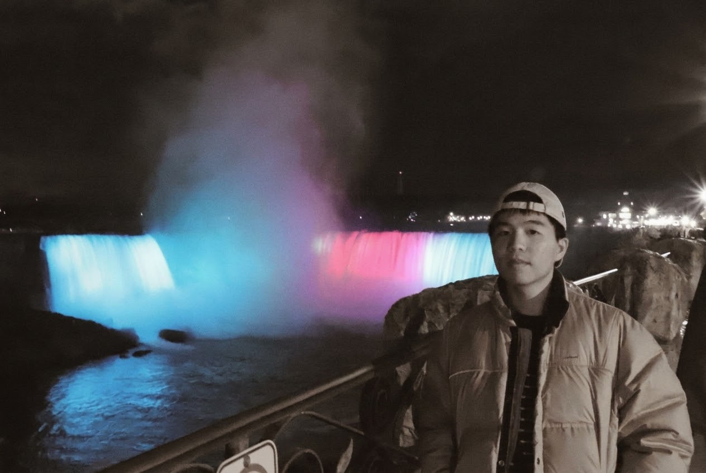

Ding-Jiun
Willy Huang

I am a PhD student at the University of Toronto, advised by Prof. David Lindell. I received my master’s degree from Carnegie Mellon University, where I was advised by Prof. Fernando de la Torre and Prof. Cheng Zhang. Prior to this, I had the privilege of being advised by Prof. Yu-Chiang Frank Wang and Dr. Cheng Sun from NVIDIA Research.
My research focuses on human-centered world modeling and 3D/4D generation.
Publications
-
SIGGRAPH Asia 2026
-
3DV 2026
-
arXiv preprint 2024
-
CVPR NTIRE Workshop 2023
-
IEEE Intelligent Vehicles Symposium 2023